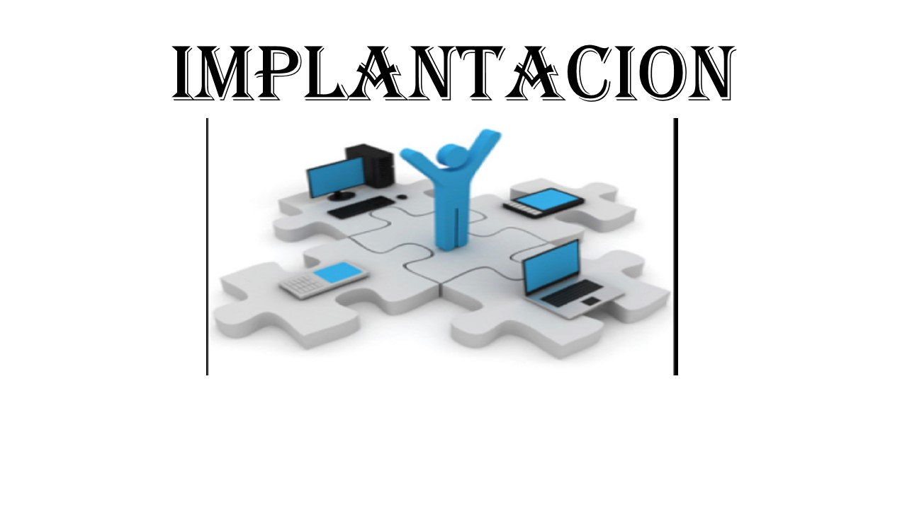

Es la ultima fase del desallo de Sistemas. En este proceso se instala el Software, como resultado de previo analisis y diseño y mejoramiento de llevar a cabo un proceso
Al realizar la implementación del Sistema debemos asegurar que sea operacional, es decir que funcione correctamente de acuerdo a los requerimientos del analisis y que el usuario final lo pueda utilizar
CAPACITACION DE USUARIOS DEL SISTEMA
- Se debe enseñar a los usuarios la forma de uso.
- Es responsabilidad del analista es capacitar a los usuarios tanto primarios como secundarios.
- En el proceso de capacitación se debe dividir en secciones ya que habran usuarios con nivel de habilidad e interes de trabajo avanzado y otro tipo de usuarios inexpertos sera por separado la capacitación.
- Se recomendara al cliente que la persona que mejor dara la capacitación sera el analista que estuvo desde el inicio del proyecto ya que el conoce mas que nadie el sistema y al personal.